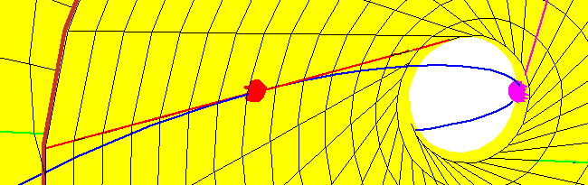
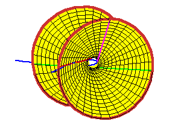
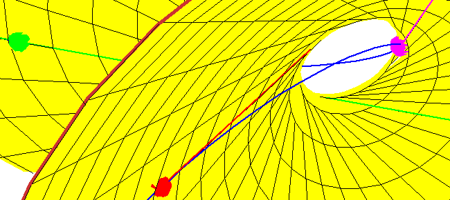

Lines Meeting 3 Tangents and 1 Secant Line
Lines Meeting 3 Tangents and 1 Secant Line
A secant line through two points between the red and
magenta points of tangency of the curve and the
hyperboloid meets the hyperboloid in 2 points, so there are two real
solutions to the problem in this case.


If the line is secant to points in different arcs, then it need not meet the
hyperboloid, and for these, there are no real solutions to the problem.
